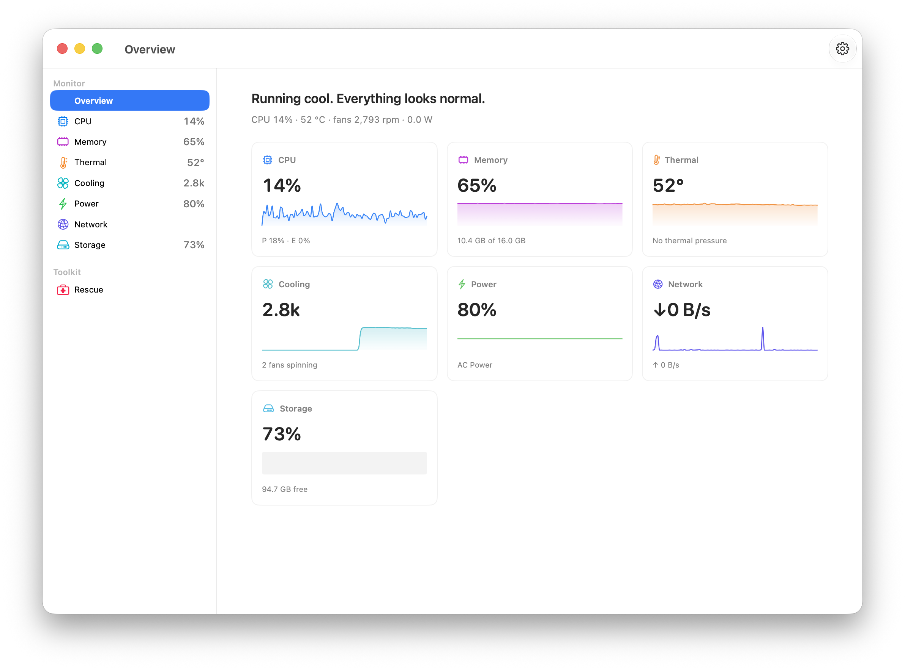
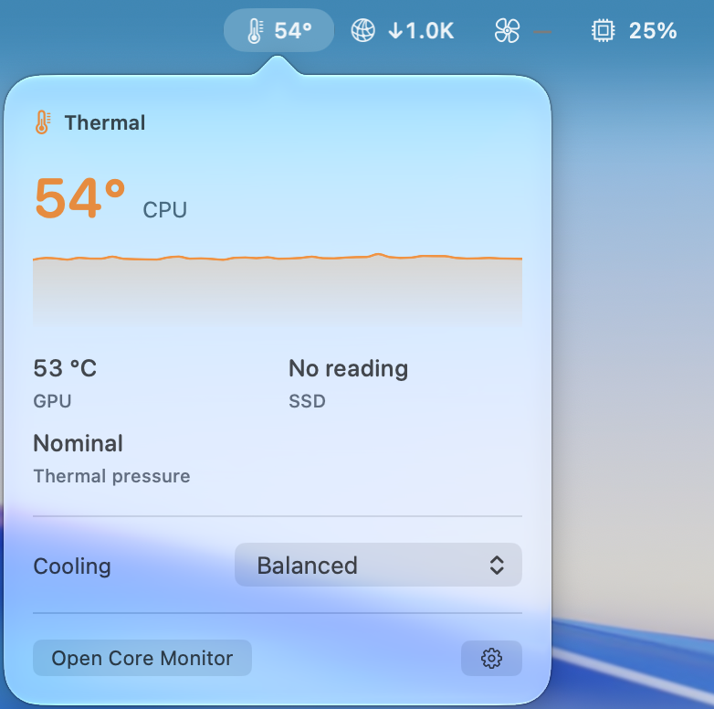
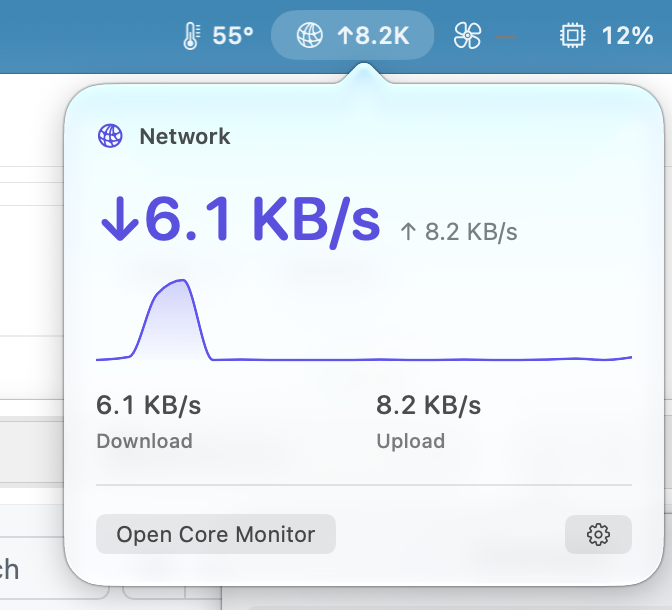
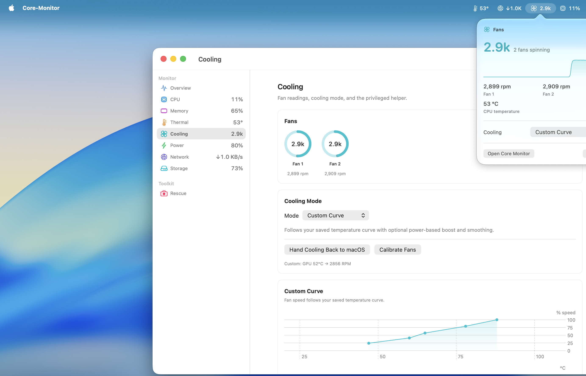
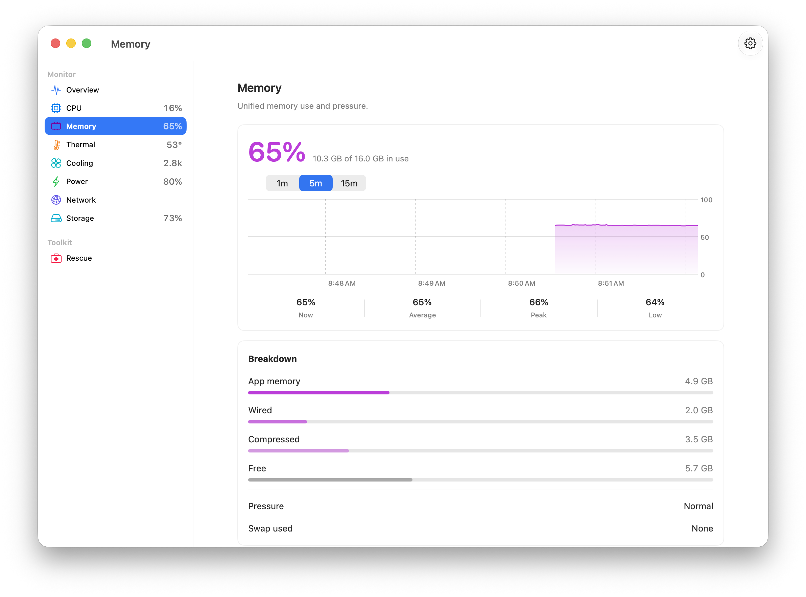
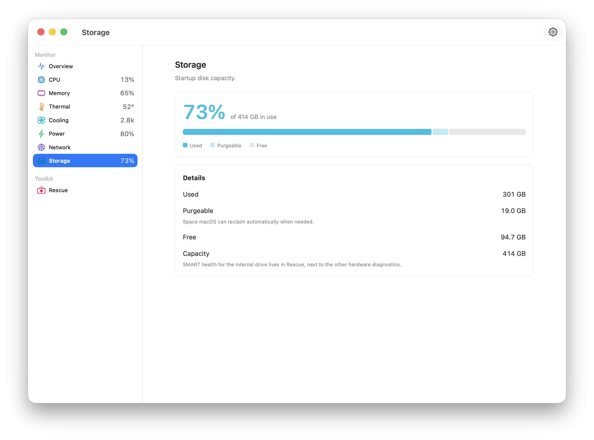

The instrument panel your Mac never shipped with.
Core-Monitor reads the sensors Apple Silicon already has: CPU load and temperature, power draw, memory, battery, fan speed. It shows them plainly, ten times a second, and when you ask, it hands you the fans. Nothing leaves the Mac.
Apple Silicon, macOS 13 or later. About 4 MB. Free and open source under GPL-3.0. Also on the Mac App Store, or install with Homebrew.
52°C
CPU temperature2,790rpm
Fan speed14%
CPU load9.2W
System powerRunning cool. Everything looks normal. This is a simulated Mac, generated in your browser at ten samples a second so the page has something honest to show. The app reads the real sensors.
Seven subsystems, read ten times a second.
Each one gets a screen in the app and a line in the menu bar. Below, the same simulated Mac, one row per subsystem, the last minute of each.
52°C
No thermal pressure. CPU average and peak, GPU at 49 °C, and the storage sensor, read from the SMC.
14%
Performance cores at 18%, efficiency cores at 6%. Load across every core, sampled live, and the processes behind a spike.
10.4GB
Pressure normal. App 7.1, wired 2.2, compressed 1.1 GB, swap in use, and the processes holding the most.
2,790rpm
Custom curve. Every fan the SMC reports, the cooling mode, and whether the helper is reachable. Fixed speeds or a curve; automatic again the moment you ask.
9.2W
System draw by component as it happens, battery charge and health, and the cycle count.
1.0KB/s
Throughput across all interfaces, with 0.2 KB/s going out right now. The same graph sits in the menu bar panel.
73% used
Used, purgeable and free on the startup disk, with purgeable shown as its own figure. SMART health for the drive lives in Rescue, next to the other hardware diagnostics.
One screen per subsystem. The short version lives in the menu bar.
Nine screens in the window: Overview, CPU, Memory, Thermal, Cooling, Power, Network, Storage and Rescue. Each menu bar item opens a compact panel for its own reading.



The Overview, with the thermal and network panels as they drop down from the menu bar. Everything here is read on the Mac and drawn by the app, with no web view in between.
Cooling
Every fan, the cooling mode, and the curve that decides. Reading sensors never needs anything. Writing a fan speed needs a small privileged helper, installed with administrator approval, and one switch hands cooling back to macOS.
Try the curve editor
Memory
Pressure, not just a percentage. App, wired and compressed memory, swap in use, and the processes that hold the most, so a slow afternoon has a cause rather than a colour.

Storage
The startup disk, with the part macOS hides. Purgeable space is shown separately from free space, so the number you see is the number you can use. Drive health moves to Rescue, where the hardware diagnostics live.

Fifteen seconds, start to finish.
The Overview, the menu bar panel and the Cooling screen with its fan curve, in one short take. No narration.
Read-only, until you decide otherwise.
This is the fan curve from the Cooling screen, working. Drag a point. Push the temperature. Hand control back to macOS and watch the curve let go.
Fan speed in rpm against CPU temperature. Points move with the pointer or the arrow keys; hold Shift for bigger steps.
2,790rpm
Your curve, following the live temperature.
macOS keeps the last word. The system's own thermal limits apply regardless of what any app asks for. A curve can run the fans harder or quieter inside those limits, never outside them.
One click gives control back. The switch sits on the same screen as the curve and reads, in full, Hand Cooling Back to macOS.
The helper is optional. Every reading works without it. It exists only to write fan speeds, and it is installed with administrator approval the first time you ask.
The helper watches the connection. Manual targets are supervised while the app stays connected and sends a heartbeat. A lost connection or an expired lease triggers an attempt to return the fans to automatic.
The Touch Bar, put back to work.
On a MacBook Pro with a Touch Bar, Core-Monitor can keep temperature, fan speed, load and network on the strip above the keyboard, where a glance costs nothing. Pick the readings you want there; the system controls stay where they were.
Readings stay on the machine that made them.
- Monitoring data sent anywhere
- None
- Account
- None
- Analytics or crash reporting
- None
- Advertising
- None
- Connections the app opens on its own
- None
- Live Weather
- Off by default. If enabled, location via macOS, weather via Apple WeatherKit
- Mac App Store edition
- Sandboxed
- Source
- All of it, GPL-3.0
Everything the app knows about your Mac is read on your Mac and stays there. The only outbound request it can make is for weather, and only after you turn Live Weather on and grant location access; the developer never receives that data. The App Store edition is sandboxed and reads only what the sandbox allows. Its privacy policy says the same thing in the words Apple requires.
Where it sits next to the others.
Good tools, all of them. Core-Monitor is for the person who wants the thermal picture, native, free, and nothing more.
| App | Strong at | Core-Monitor instead |
|---|---|---|
| iStat Menuspaid | Breadth. A menu bar item for nearly everything macOS exposes, with years of polish. | Depth on heat, power and fans, with fan control included and no licence. |
| Statsfree | An open-source menu bar monitor with wide module coverage and a big community. | Full screens as well as menu items, a thermal history, and a fan curve you can draw. |
| TG Propaid | Fan control on every Mac going back years, with sensor diagnostics. | The same fan control for Apple Silicon, with the rest of the system alongside it, for free. |
| Macs Fan Controlfree, pro paid | Simple manual fan speeds, long history. | Curves rather than fixed speeds, with the temperatures that justify them on the same screen. |
| Activity Monitorbuilt in | Already on every Mac; processes, energy impact, disk and network. | Temperatures, fan speeds and power in watts, which Activity Monitor does not show. |
Two editions. Both free.
The direct build has everything, including fan control and the Touch Bar. The Mac App Store edition is sandboxed, so it reads what the sandbox allows and writes nothing.
Direct build macOS 13 or later, Apple Silicon
A signed and notarised DMG, about 4 MB. Open it, drag the app to Applications, launch. The fan helper is installed later, only if you ask for it.
- Every reading and every screen
- Fan control with the privileged helper
- Touch Bar widgets
- Rescue: read-only hardware diagnostics
# Homebrew
brew tap --custom-remote offyotto/core-monitor https://github.com/offyotto/Core-Monitor
brew install --cask offyotto/core-monitor/core-monitor
Mac App Store macOS 14 or later
Reviewed by Apple and updated through the App Store. The sandbox rules out the privileged helper, direct sensor access and the Touch Bar, so this edition covers CPU, memory, network, the startup disk, battery and thermal state.
- CPU, memory, network, startup disk, battery, thermal state
- Fan control and the privileged helper
- Touch Bar widgets
- Updates through the App Store
Questions people ask before installing.
Which Macs can run it?
Apple Silicon Macs on macOS 13 or later. The sensors and fan interfaces it reads are specific to Apple’s own chips, so Intel Macs are not supported.
Do I need the helper installed?
No. Every reading works without it. It exists only so the app can write fan speeds, and you can hand control back to macOS whenever you like.
Does it phone home?
Core-Monitor has no account, advertising, or analytics, and it does not send monitoring data to the developer. Live Weather is off by default. If you explicitly enable it, the app asks macOS for location access and requests weather from Apple WeatherKit. Turning it off stops Core-Monitor’s weather requests.
Can fan control damage my Mac?
macOS keeps its own thermal limits regardless of what any app requests. Core-Monitor also keeps an obvious way out: one click gives full control back to the system.
What is deliberately left out?
Cloud dashboards, fleet management, and a metric for every corner of the OS. The scope stays heat, power, memory, battery and fans, done properly.
Where do bug reports go?
Open an issue on the GitHub tracker. Release notes and older builds live on the releases page.
Your Mac has been taking its own temperature all along. Start reading it.
Apple Silicon, macOS 13 or later. About 4 MB. GPL-3.0. Made by offyotto.